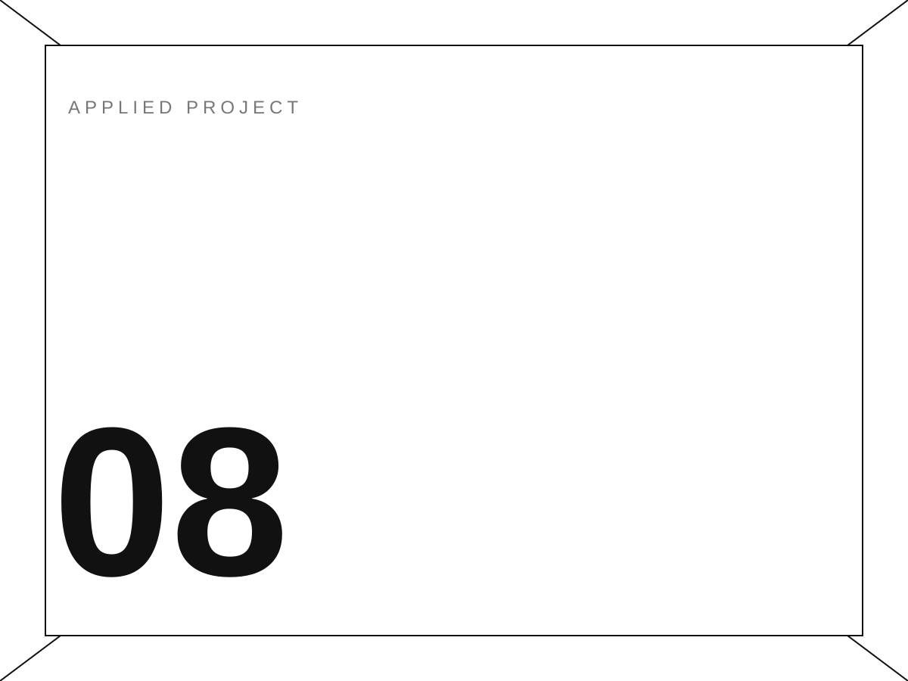

← 返回主页 BACK TO HOME08 / 17
视觉设计 · 落地项目 / 待补充
已落地
落地项目 08（资料待补）
IMPLEMENTED PROJECT 08
已预留为独立作品卡；补入真实标题、说明与图片后即可完整展示。

01 / OVERVIEW
已预留为独立作品卡；补入真实标题、说明与图片后即可完整展示。
这是第八个落地项目的资料预留页。目前没有足够的标题、图片与项目说明，因此使用清楚标记的占位内容，不虚构项目信息。
- 年份 / YEAR
- 待补充
- 类型 / TYPE
- 视觉设计 · 落地项目
- 工具 / TOOLS
- 待补充 / TO BE ADDED
- 角色 / ROLE
- 独立设计 / INDEPENDENT
02 / PROCESS + OUTPUT
01 IMAGES